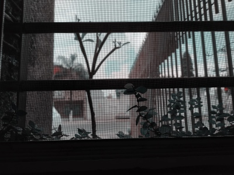

Bienvenidos a mi sitio web
A continuación se muestra una imagen de una planta tomada con la cámara de un celular. Si le das clic, podrás ver un acercamiento de la planta.
Los elementos básicos de la foto son los siguientes:
Da clic en el enlace para más información en inglés sobre lo que es una enredadera.
Para cambiar el nombre que aparece en el encabezado, da clic en el siguiente botón:
El siguiente es un botón de prueba y puedes cambiar el nombre del jugador haciendo clic en él:
Jugador 1: Chris
Ejemplo de caracteres japoneses: ご飯が熱い。.